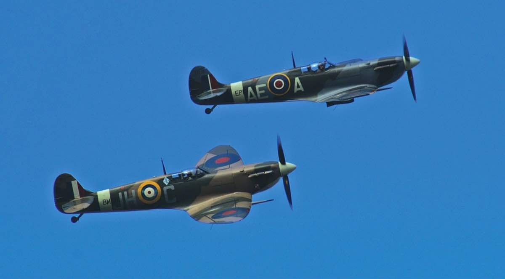

Quick-tempered indeed. When Germany invaded Britain in 1940, the British hugely were outnumbered. With their 300 or so Spitfires, however, they were able to shoot down a staggering 500 enemy aircraft.
R. J. Mitchell was the designer of the legendary Spitfire. The first prototype of the Spitfire would then see it's first flight on the 5th of March, 1936.
Believe or not, there were a total of 24 different Spitfires models, or marks. The most produced being the Spitfire Mark V with over 6000!